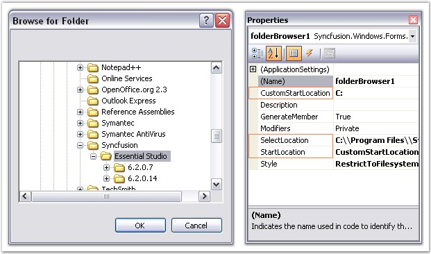
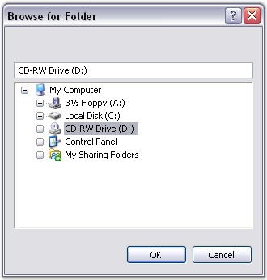
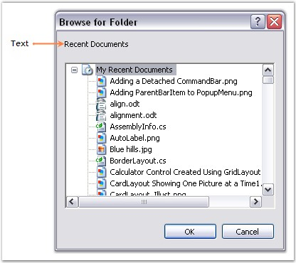

The following topics will help you become more familiar in using the FolderBrowser control.
This section deals with the location settings of the FolderBrowser control.
The FolderBrowser allows the user to provide the location from which browsing should start. It also provides various options from which the root folder for browsing can be selected. The following properties illustrate this.
|
FolderBrowser Properties |
Description |
|
StartLocation |
Specifies the location of the root folder from which to start browsing. It is the functional equivalent of setting the PIDL value.
Desktop, Internet, Programs, Controls, Printers, Personal, Favorites, Startup, Recent, SendTo, BitBucket, StartMenu, MyDocuments, MyMusic, MyVideo, DesktopDirectory, MyComputer, NetworkNeighborhood, NetHood, Fonts, Templates, MyPictures, CommonDocuments, CommonAdminTools, AdminTools, NetAndDialUpConnections, CommonMusic, CommonPictures, CommonVideo, Resources, ResourcesLocalized, CommonOemLinks, CDBurnArea, ComputersNearMe, CustomStartLocation, FlagPerUserInit, FlagNoAlias, FlagDontVerify, FlagCreate and FlagMask. |
|
CustomStartLocation |
Gets / sets custom start location for showing the dialog. |
|
SelectLocation |
Gets / sets the selected location for showing the dialog. |
|
DirectoryPath |
Retrieves the location of the selected folder. |
 Note: For the SelectLocation property to
take effect, the StartLocation property must be set to
'CustomStartLocation'.
Note: For the SelectLocation property to
take effect, the StartLocation property must be set to
'CustomStartLocation'.
|
[C#]
// Set the enumeration value FolderBrowserFolder.CustomStartLocation for Folder.StartLocation property. this.folderBrowser1.StartLocation = Syncfusion.Windows.Forms.FolderBrowserFolder.CustomStartLocation; this.folderBrowser1.CustomStartLocation = "C:";
// SelectLocation property for Automatic Scroll and Highlight of desired path. this.folderBrowser1.SelectLocation = "C:\\Program Files\\Syncfusion\\Essential Studio"; |
|
[VB.NET]
' Set the enumeration value FolderBrowserFolder.CustomStartLocation for Folder.StartLocation property. Me.folderBrowser1.StartLocation = Syncfusion.Windows.Forms.FolderBrowserFolder.CustomStartLocation Me.folderBrowser1.CustomStartLocation = "C:"
' SelectLocation property for Automatic Scroll and Highlight of desired path. Me.folderBrowser1.SelectLocation = "C:\\Program Files\\Syncfusion\\Essential Studio" |

Figure 432: Location Settings of FolderBrowser
A Sample which demonstrates the Location Settings of FolderBrowser is available in the below sample installation path.
..My Documents\Syncfusion\EssentialStudio\Version Number\Windows\Tools.Windows\Samples\2.0\Editors Package\FolderBrowserDemo
The style settings that are available for the FolderBrowser Dialog are given below.
|
FolderBrowser Property |
Description |
|
Style |
Specifies the options for the FolderBrowser Dialog.
The options included are as follows.
RestrictToFilesystem, RestrictToSubfolders, RestrictToDomain, BrowseForComputer, BrowseForEverything, BrowseForPrinter, NewDialogStyle, AllowUrls, ShowAdministrativeShares, ShowShares, ShowTextBox, StatusText, UAHint and Validate. |
The various options of the Style property are described below.
· RestrictToFilesystem - Restricts selection to file system directories.
· RestrictToSubfolders - Returns only file system ancestors.
· RestrictToDomain - Excludes network folders below the domain level.
· BrowseForComputer - Displays only computers.
· BrowseForEverything - Displays files as well as folders.
· BrowseForPrinter - Displays only printers.
· NewDialogStyle - Uses the new resizable folder selection dialog.
· AllowUrls - Displays URLs. 'NewDialogStyle' and 'BrowseForEverything' must be set along with this flag.
· ShowAdministrativeShares - Displays administrative shares existing on the remote system.
· ShowShares - Displays shareable resources existing on the remote system.
· ShowTextBox - Displays textbox in the FolderBrowser Dialog.
· StatusText - Includes status area in the dialog box. StatusText can be specified in the FolderBrowserCallBack event handler. This style does not apply to 'NewDialogStyle'.
· UAHint - Adds an usage hint to the folder dialog. It can be applied only with 'NewDialogStyle'.
· Validate - Typing invalid name in the textbox triggers FolderBrowserCallBack event.
|
[C#]
this.folderBrowser1.Style = Syncfusion.Windows.Forms.FolderBrowserStyles.ShowTextBox; |
|
[VB.NET]
Me.folderBrowser1.Style = Syncfusion.Windows.Forms.FolderBrowserStyles.ShowTextBox |

Figure 433: "ShowTextBox" Style of FolderBrowser
A Sample which demonstrates the Style Settings of FolderBrowser is available in the below sample installation path.
..My Documents\Syncfusion\EssentialStudio\Version Number\Windows\Tools.Windows\Samples\2.0\Editors Package\FolderBrowserDemo
The text settings of the FolderBrowser control are described below.
The text for the FolderBrowser can be set using the below given property.
|
FolderBrowser Property |
Description |
|
Description |
Gets / sets the text displayed above the tree control in the FolderBrowser Dialog. |
The Description property of the FolderBrowser supports the 'AutoComplete' feature, that provides options that can be used to complete text even before it is entered.
|
[C#]
this.folderBrowser1.Description = "Recent Documents"; |
|
[VB.NET]
Me.folderBrowser1.Description = "Recent Documents" |

Figure 434: Text set for the FolderBrowser